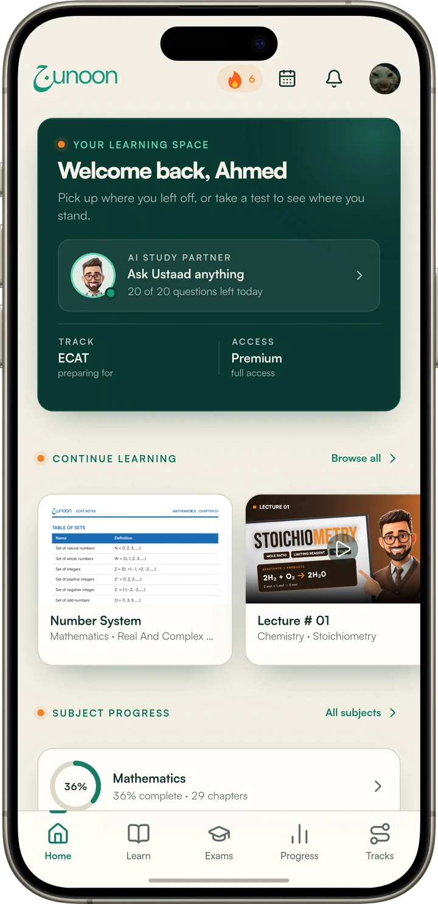
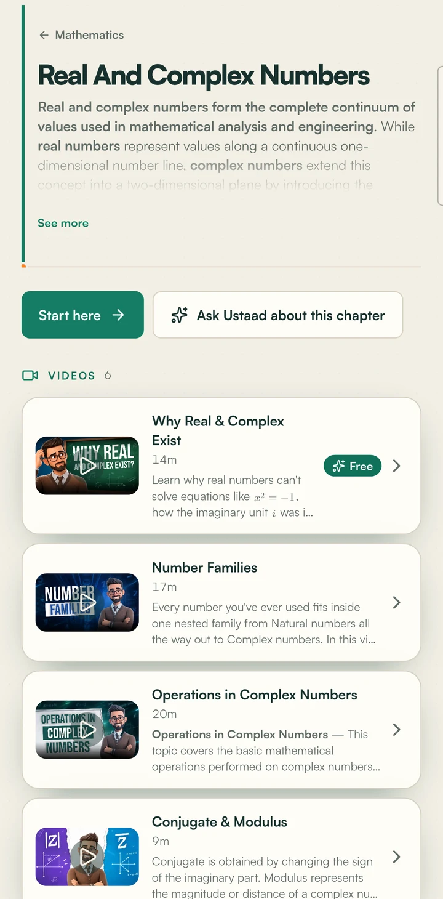
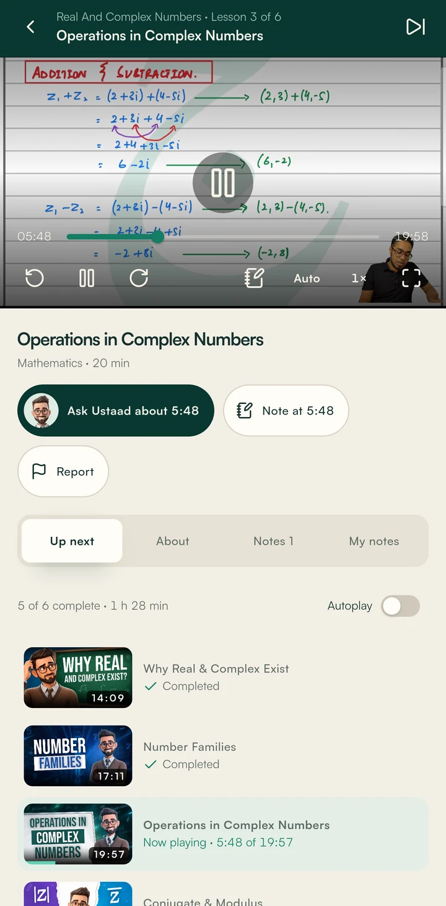
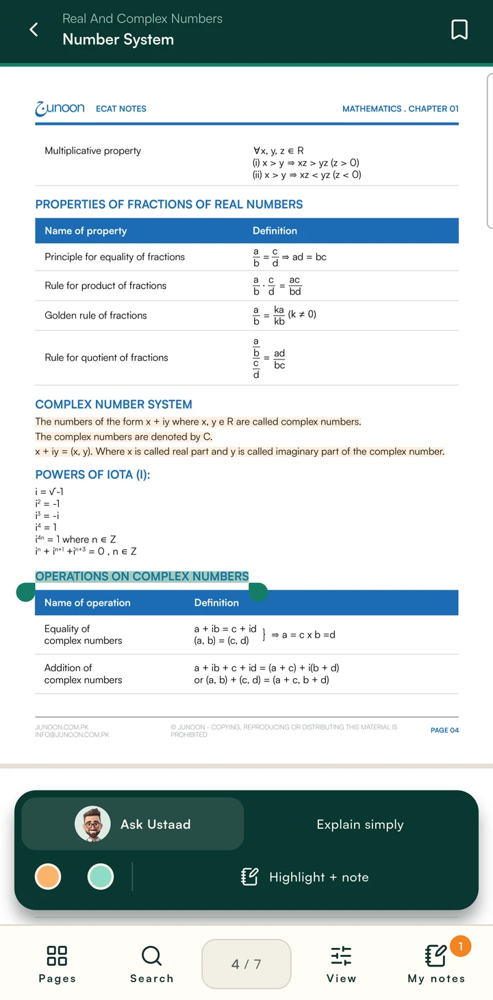
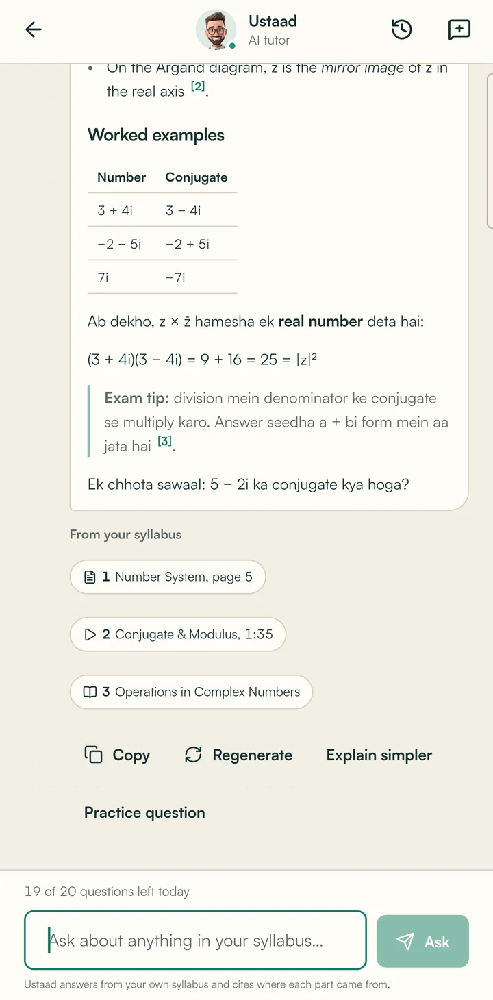
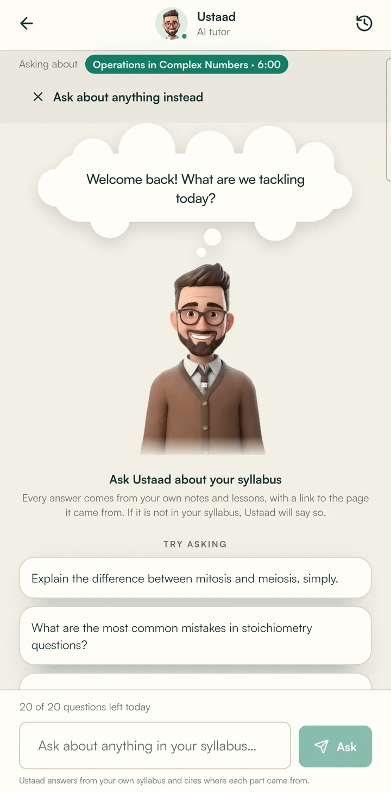
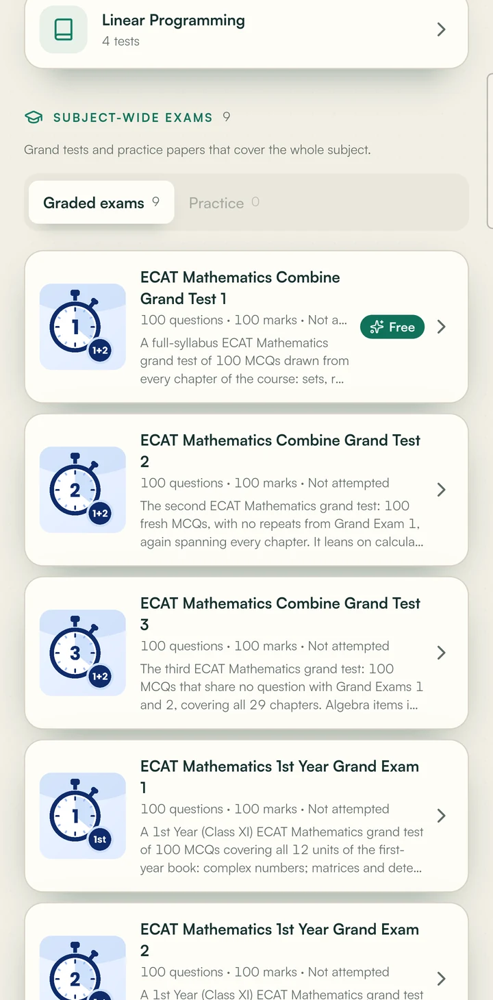
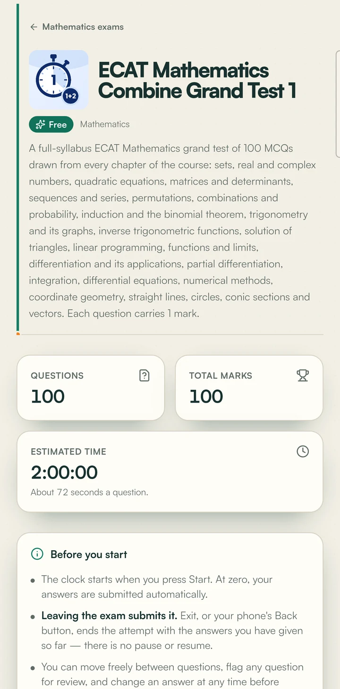
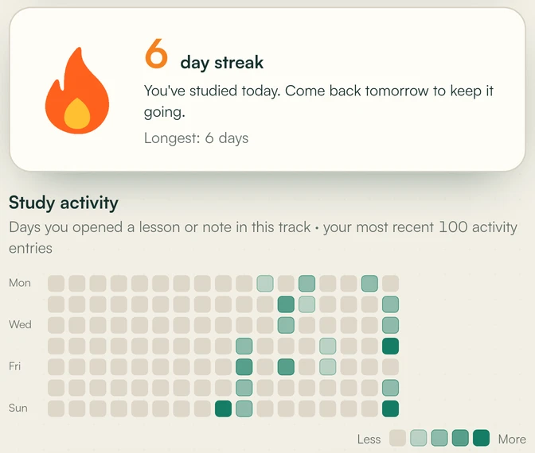
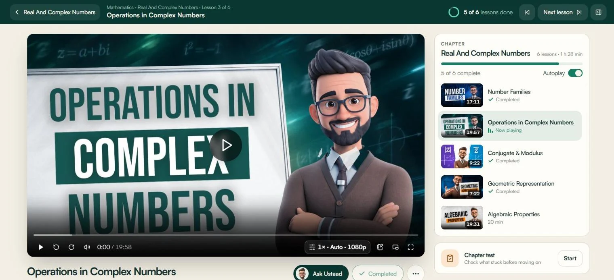

Padhai kanaya andaaz.
Lessons, notes, tests and an AI teacher. One app on your phone, and the same account on the web.
I'm Ustaad.
Padhai mushkil nahi.
Bikhri hui hai.
Notes in five WhatsApp groups
And the one you need is never there the night before the test.
The lecture went too fast
And at 11 PM there is nobody to ask "sir, ek dafa phir?"
No idea what's weak
Until the result comes out, and by then it's too late to fix.
Tuition, travel, tiredness
Hours on the road that could have been study time.

Everything you need to top your exam. One place.
HD lessons + chapter notes
Timed tests, like the real exam
Ustaad answers your doubts, 24/7
Streaks and progress you can see
Aap kisi bhi class mein ho,
Junoon aap ke saath hai.
Matric
Sindh Board
Intermediate
Sindh Board
O Level
GCE / IGCSE
ECAT
Engineering
MDCAT
Medical
SAT
Study abroad
BCAT
Business
Pick your track once. Every subject, lesson and test is set up for it, and you can switch whenever you like.
Lectures that remember where you stopped.
- Pick up exactly where you left offOn the bus, in a break, before sleep.
- Pin a note to the exact minute"5:48: subtraction trick" is saved for the night before the test.
- Ask Ustaad about the minute you're stuck on
- HD quality, and the next lesson plays on its own



Notes you can mark up, not just read.
- Highlight in two colours, add your own note
- Bookmark pages and search every chapter
- Select any line: Ask Ustaad or Explain simply
- Your highlights follow you to the websiteMark it on your phone, revise it on the laptop.
Meet Ustaad. Your AI teacher, awake at 2 AM.
Ask anything from your syllabus, in English or Roman Urdu. Ustaad answers from your own lessons and notes and shows the page it used.
Doubt? Ustaad se poocho.Conjugate ka matlab hai: same complex number, bas imaginary part ka sign badal do.1
The rule
If z = a + bi, its conjugate is:
- The real part stays the same1
- The imaginary part changes sign1
- On the Argand diagram, z̄ is the mirror image of z2
Worked examples
| Number | Conjugate |
|---|---|
| 3 + 4i | 3 − 4i |
| −2 − 5i | −2 + 5i |
| 7i | −7i |
z × z̄ is always a real number:
Exam tip: division mein denominator ke conjugate se multiply karo.3
Ek chhota sawaal: 5 − 2i ka conjugate kya hoga?

Ask. Ustaad explains. With proof.
- Step by step, in simple words
- Rules, tables, formulas and worked examples
- Every answer links to the notes page or lecture minute it came from
- Then it checks you: "Ek chhota sawaal…"
Stuck? Ustaad is one tap away.
"Ask Ustaad about 5:48"

"Asking about Operations in Complex Numbers · 6:00"
Select a line, tap Ask Ustaad
Exam hall ka darr? Practice se khatam.
tests in ECAT alone
ECAT Maths tests
MCQs in a full grand test
- Chapter tests, grand tests and university past papers (NED, NUST, Dawood)
- A real clock, like the exam hall, and answers with explanations after




Streak mat todna!
- A daily streak that keeps you coming back
- A map of every day you studied
- Progress for every subject, so you know what needs you next
Thoda thoda roz. That's the whole secret.
Start on the bus. Finish on the laptop.
- Same lessons, notes and tests at junoon.com.pk
- Highlights and notes sync both ways
- One account, one streak, one subscription

Not more hours. Smarter ones.
On the bus
Today's lecture, picked up where you left it.
Notes
Highlight the formulas you keep forgetting.
Chapter test
Timed, then every answer explained.
Stuck on Q14?
Ask Ustaad. Doubt clear in a minute.
Streak +1
Sleep knowing exactly where you stand.
Sab kuch, ek jagah.
| Tuition only | Random videos | Junoon | |
|---|---|---|---|
| Doubt solved at 2 AM | ✕ | ✕ | ✓ Ustaad |
| Follows your exact syllabus | ✓ | Sometimes | ✓ |
| Timed tests like the real exam | Sometimes | ✕ | ✓ Hundreds |
| Rewind any lecture, any time | ✕ | ✓ | ✓ |
| See your progress and streak | ✕ | ✕ | ✓ |
| Lessons, notes and tests in one place | ✕ | ✕ | ✓ |
Aaj se shuru karo.
Downloading is free, and the first lesson of every chapter is free. Scan, sign up, and try it tonight.
Android
Google Play
iPhone
App Store
Website
junoon.com.pk
Shukriya!
Sawal? Ustaad se poocho... ya hum se!